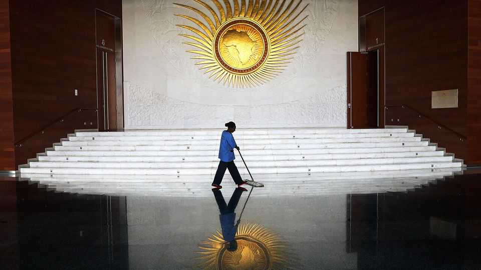

Chinese tech helps repressive African governments crush dissent
A fascinating new book investigates the cause and effects of China’s investment in Africa

Nov 5th 2026
WHEN CHINA paid $200m to build a new headquarters for the African Union (AU) in Addis Ababa (pictured), it was perceived as an act of great generosity. But five years later technicians noticed something odd. Late every night the servers, which had been provided by China, whirred furiously. Data was being exported to servers in Shanghai, including confidential emails, diplomats’ memos, security-camera footage and more. Algerian and Ethiopian specialists who later swept the building reportedly found microphones hidden under desks and inside walls.
The Chinese government and the companies involved, Huawei and ZTE, all denied any wrongdoing. No surprise there. More dismaying was the public reaction of African leaders, who voiced fury not over the surveillance but towards the reporters who helped expose it. In a gripping new book, Paul Kenyon, a British journalist, argues that China is the latest external power out to gouge the continent while empowering corrupt, local power-brokers.
His broader warning is that much of Africa is being taken over by Chinese tech. Many autocratic governments are using Chinese systems to monitor their people, especially dissidents. That means snooping via mobile-phone networks installed by Chinese firms, for example. Think of the methods of information control in Xinjiang being applied in Zimbabwe, Kenya and beyond. Mr Kenyon, who has a good eye for detail but a tendency to overstate his case, alleges that Chinese engineers in Africa are the “foot soldiers of China’s digital colonialism, enabling totalitarian regimes to prosper in Africa because China wants them to”.
China’s tech is spreading rapidly across Africa thanks partly to generous loans, which make it cheap. Much of it is used to hamper free speech and browsing. A Chinese company, Geedge, exports a version of China’s Great Firewall, for example, so African governments can try to censor what citizens see online.
Nasty regimes are the keenest to learn from China. In Kampala, the hilly capital of Uganda, white poles have been erected; they are topped with some 5,000 cameras that feed images to 83 monitoring centres. This is presented to the public as a measure to cut crime: the monitors use AI, facial recognition and biometric analysis to track individuals. But it is also a tool for a repressive government: Yoweri Museveni, the president, can monitor those who support the opposition.
For years America, Britain and other rich countries have shunned contracts with Huawei and ZTE, citing security risks. No such hesitancy exists in Africa, where few governments could afford to risk damaging relations with a big trading partner. China has also provided loans for countries, including Algeria and Nigeria, to pay for satellites that it built and launched.
In a related corner of the contest for information, Mr Kenyon points to the surging number of Chinese communications staff, whom he calls “propagandists”, setting up in Africa. Xinhua, China’s official state news agency, has around 35 bureaus on the continent, more than any other news firm.
What is the end-game? China is pursuing Africa’s natural resources, including its abundant oil reserves and rare earths. But it is also trying to win political support for its challenge to Western values. China may succeed in creating a “splinternet” in Africa, with digital interaction happening only in tightly monitored spaces.
This would be a “sterile world” with no dissent, Mr Kenyon argues. It would also mark a change from today when, in order to shut up opposition voices, governments sometimes cut off millions of people from online services for months or even years. “China’s African Empire” is a clear-headed warning that, as with the AU building, China is not necessarily the benign partner it claims to be. Sometimes you need to look a gift horse in the mouth. ■